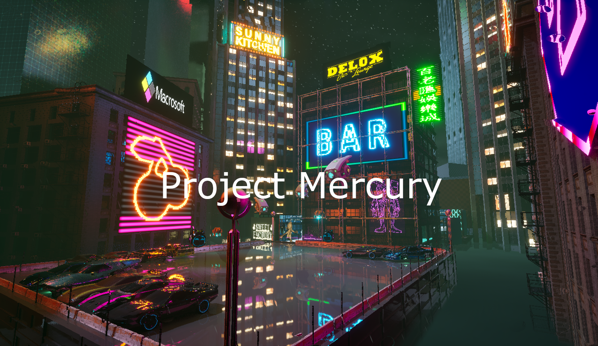
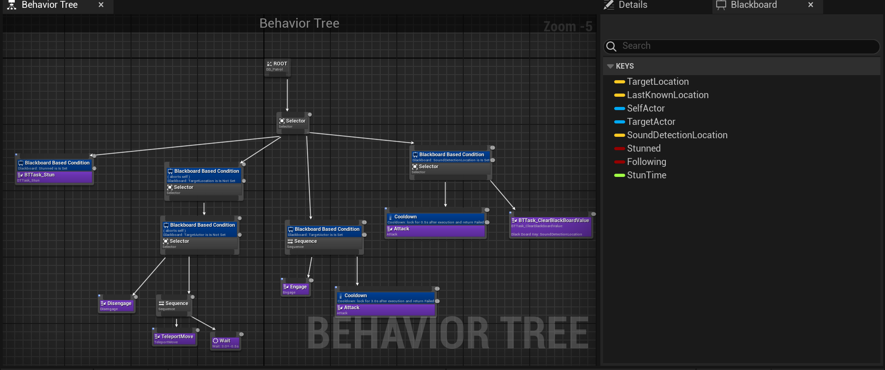
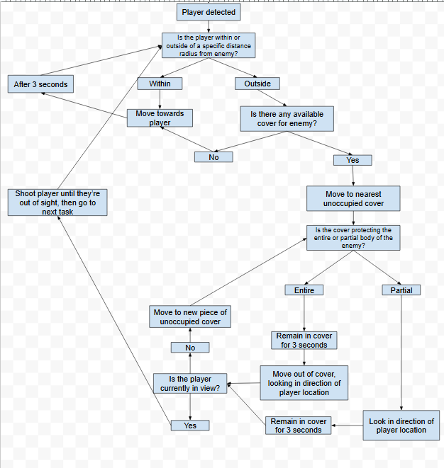
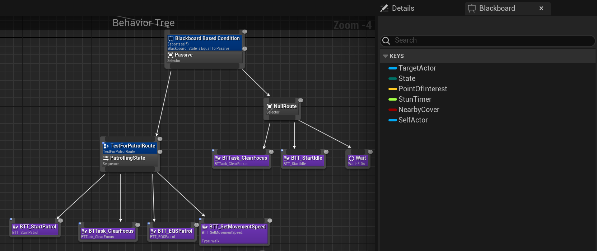
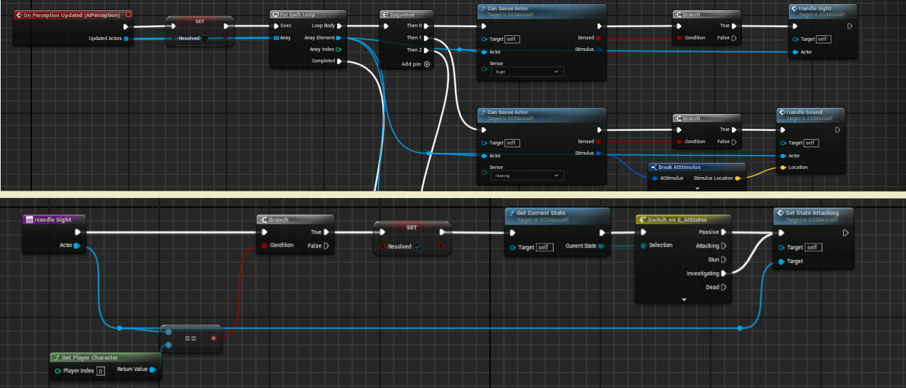
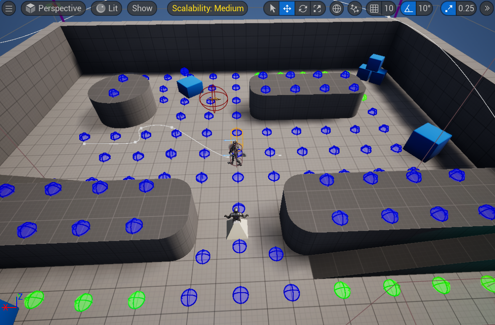

• Idles until detecting the player
• Upon detection charges the player
• When close enough detonates a deadly surpise


Project mercury is a fast paced first person shooter focused on advanced movement that aims to make the player feel like an experienced agent. Project mercury is set in the year of 2093 and the player is tasked with retrieving valuable data from Detroit which is now inhabited by only robots.
The goal of this project was to show of the skills of the 14 people on the team and display the quality we could achieve in 5 months. Personally, I worked on the developing the enemy AI. With this being my first time working in Unreal Engine I had three goals in mind. First, learn to use Unreal Engine and apply my previous experience. Second, to grow my knowledge by developing AI for a new style of game. Third, and finally, to show off my skills as an AI developer.
| Boom Agent • Idles until detecting the player • Upon detection charges the player • When close enough detonates a deadly surpise |
|
 |
Patrol Agent • Classic guy with a gun • Patrols a set route • Wields a classic assault rifle, brutal shotgun, or deadly sniper. • Unique behaviours for each weapon. |
The first step for making any enemy is figuring out what enemy you want to make. What this means for me is talking with designers and those within the enemy pod of our team. With design being an iterative process we started with verbal communication and simple behaviours. This included things such as the early behaviours of the patrol agent. It had simple enough behaviour. Patrol a set of points, investigate sound, and shoot the player if it sees them. For me this was also a chance to see how my past experience with AI and enemy development translated into Unreal Engine.
| Patrol Behaviour Trees • Started with a Behaviour tree and Blackboard • Made to be easily modifed for various weapons |
 |
 |
Early AI Controllers • AI controllers to run BTrees • preformed testing here to catch early bugs. |
| Functionality • Implemented after successful testing of behaviour • Used enemy version of the player's guns provided by the weapons programmer • Followed by final testing before deploying |
 |
Due to their simplicity the enemies were naturally less interesting to fight. They moved and preformed as intended, but they left something to be desired. Nobody in a gun fight wants to stand in the open! So now the question becomes, how do I get an enemy to find cover?
Later as more of the players actions made produced sound for the enemies they became overwhelmed and sometimes went towards the sound stimuli instead of attacking the player.
|  | Final Behaviour • The Enemy pod had a meeting to discuss final designs • Flow charts were used to describe the more complex behaviours • Enemies now were required to make use of cover |
| New Behaviour Trees • Used the behaviour flow charts as a reference • Created states to accomodate the behaviour defined by the flow chart • Each state is filled out as needed to handle a section of the flow chart. • New blackboards are also made to support the new behaviour trees |
 |
|  | New AI Controllers • New AI Controllers are made to pair with the new behaviour trees • Perception handling is improved to accomodate the new state based behaviour trees • The improvements also addressed the challenge provided by sound detection • Once again testing is preformed. |
| Cover System • Makes use of the Environmental Query System • Quickly finds strategic positions for enemies during combat • More testing is preformed to ensure enemy behaviour preforms as intended |
 |
 |
Boss Design • A boss was orignally planned • Worked on with the other enemy programmer • The process also began with a behaviour flow chart. |
| Behaviour implementation • Behaviour tree and blackboard created using the flow chart as a reference • Rough functionality was implemented • Certain necessary aspects were finished too late • Final decision was to cut the boss and not end the game with something that did not match the rest in quality |
 |
Throughout the project I learned Unreal Engine and worked with blueprint for the first time. During the early implementation our there were some troubles communicating with the enemy designer on the exact details. This was remedied by behaviour flow charts creating a middle ground between design and implementation.
I also learned that I need to fully explore any engine I'm working with as best I can before implementing code. Having a better understanding of Unreal Engine's AI systems, especially the Environmental Query System, would have helped immensely with the first implementation and saved time on the final implementation.
Email: CSOtten02@gmail.com